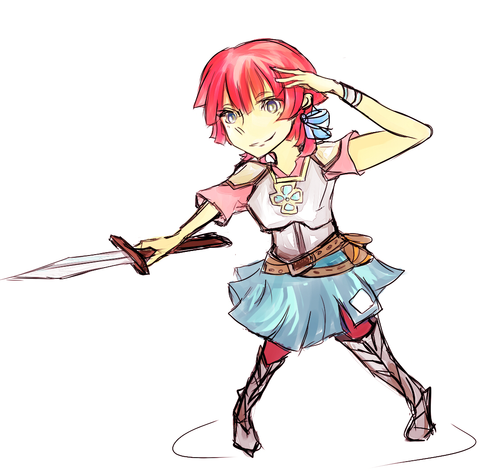
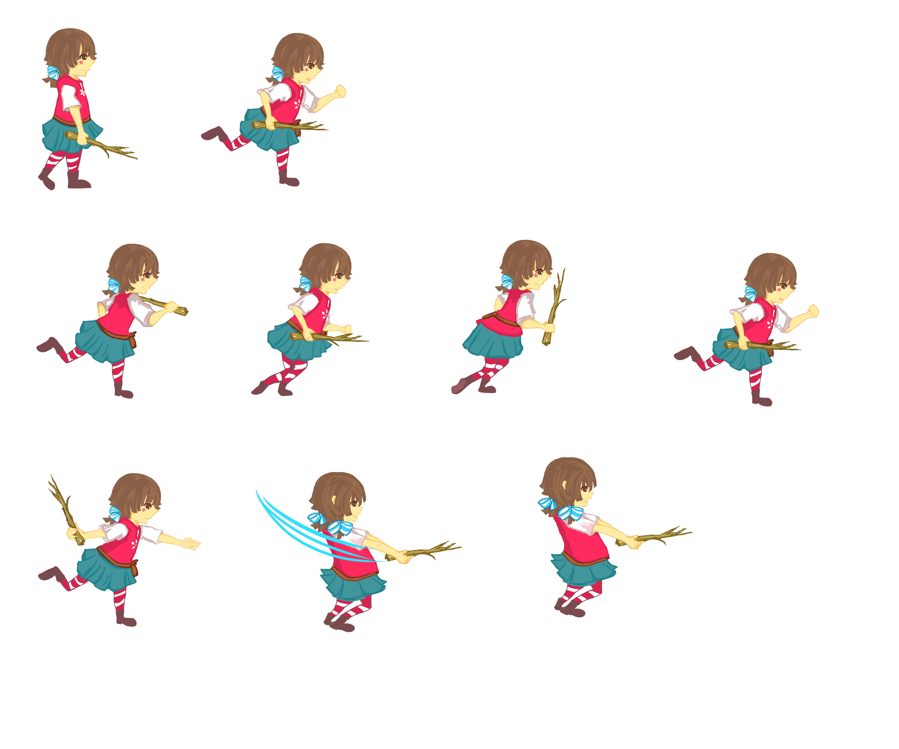
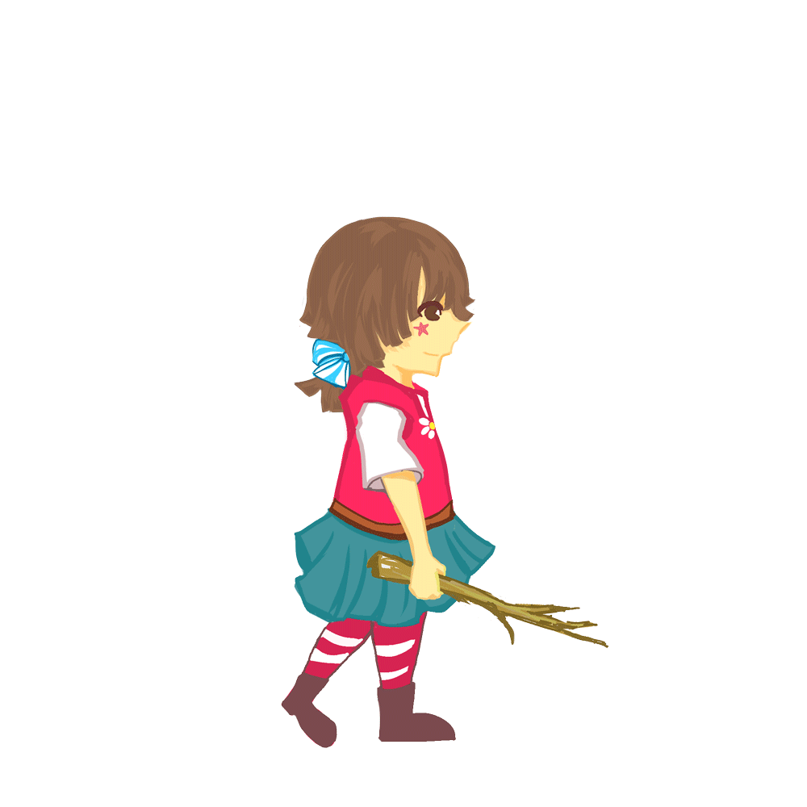
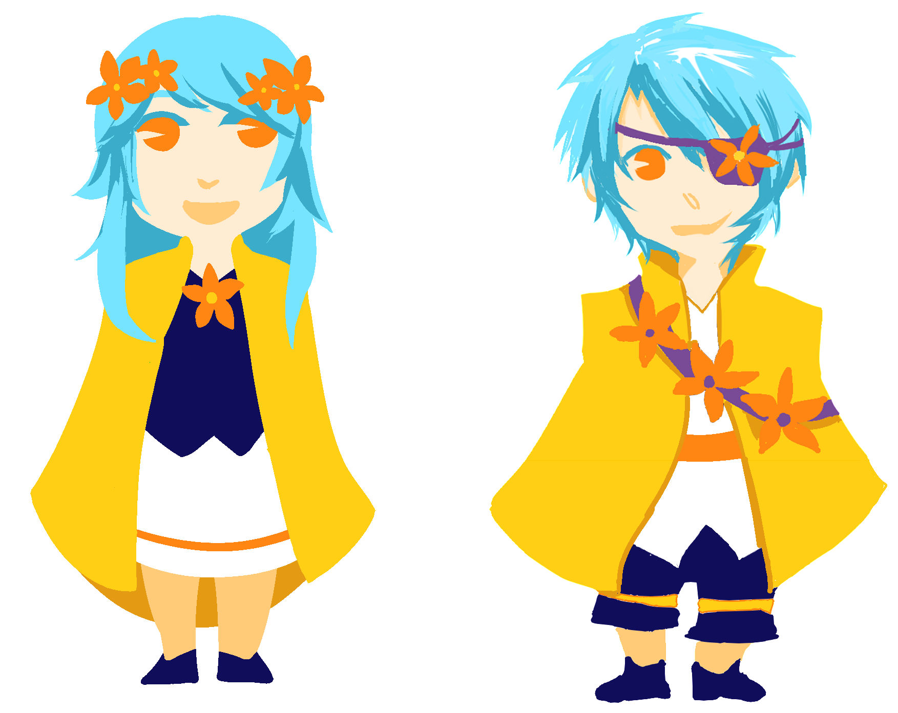
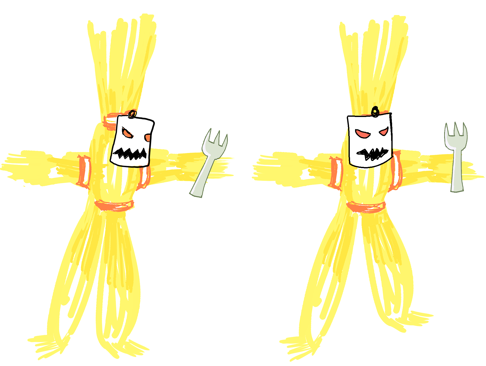
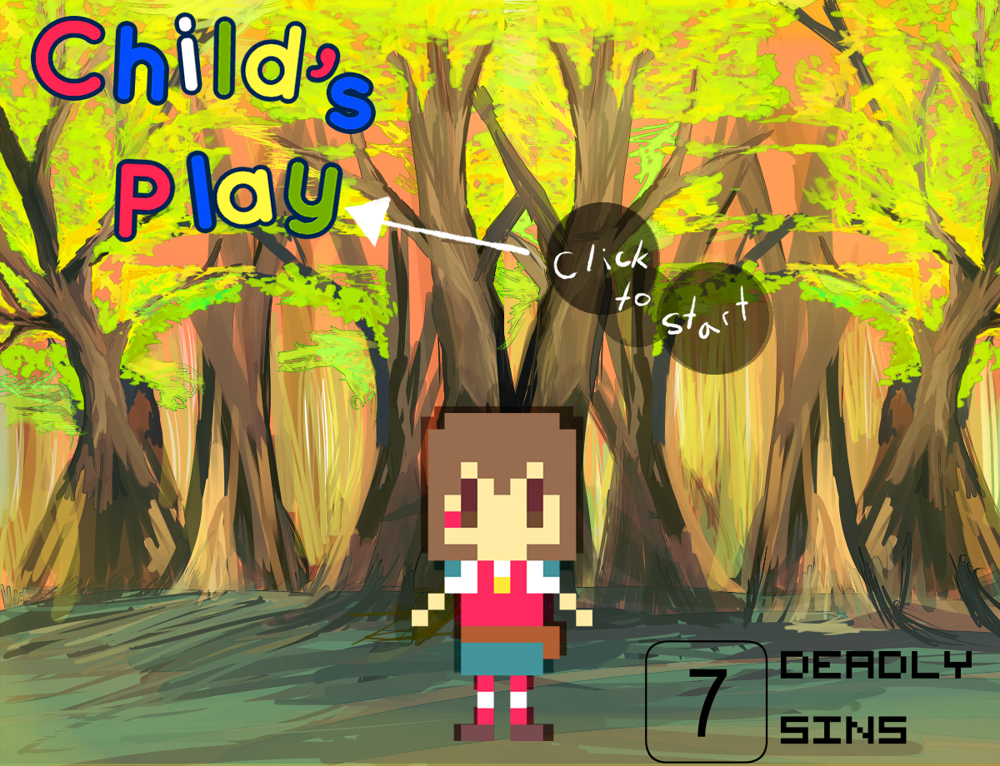
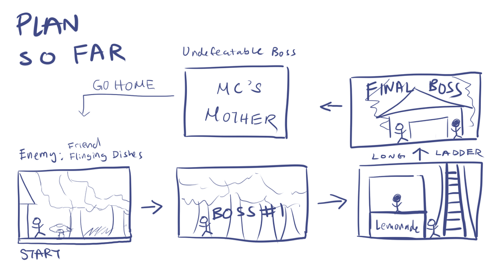
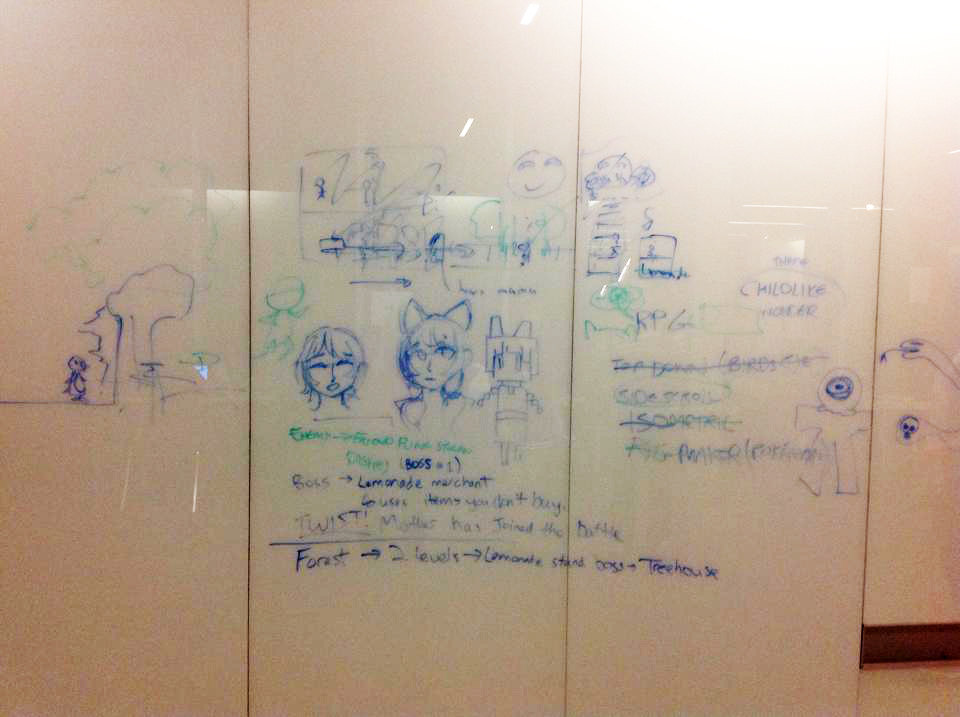
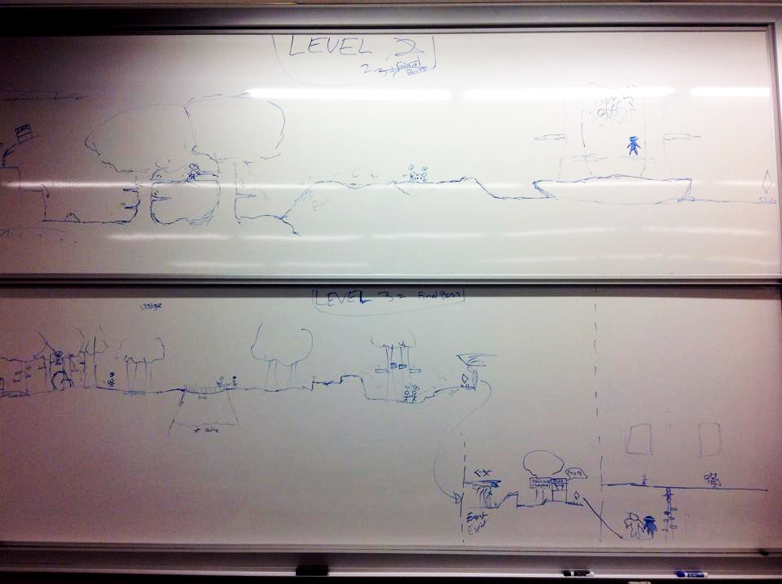
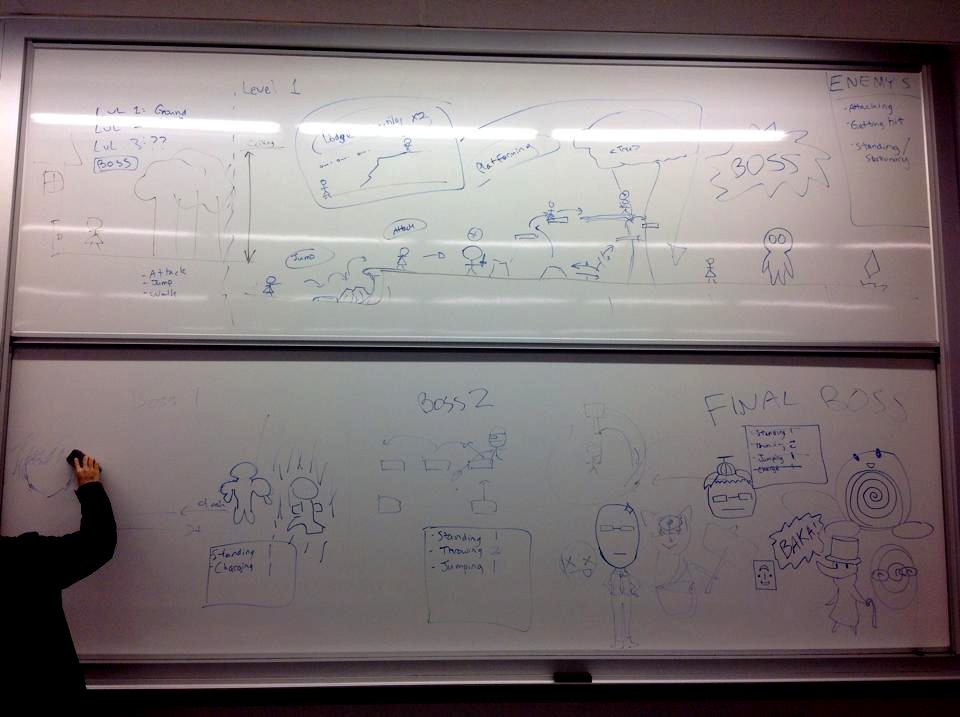

What is Child's Play?
Child's Play is an Adventure RPG created by 7 Deadly Sins at the Fall 2014 GI Game Jam held at uWaterloo.The game can be found Here. 
Game Concept
What was just the heroine's backyward becomes a mystical forest. Worn out clothes become armor and
everyday items are now your weapons,
Advance and clear the trials that await you!
Game Jam Themes:Unorthodox Main Character & Symmetry
The concept was to create a game where the player can embark on an quest through the eyes children whose imaginative perceptions of the world are assymetrical to how the world objectively appears.
Hopefully it will remind you of all those times you ran around playing make-believe as a child :)
What I Contributed
As one of the Graphic Artists on the team, I mainly worked alongside the other artist to generate character designs and create the character sprites and other visual assets. In particular, I spent a good amount of time working on the sprites for the heroine:

Other Art Assets: (Additional credits go to Monique Yu)
Other Sprites: Midway Bosses and Straw Monsters
 
Title Screen:

The Game Jam Process
After forming our team (3 Programmers, 2 Designers, 1 Composer and 1 person for Moral Support), we rapidly got to work brainstorming game and character ideas.Tools Involved:
Throughout the Jam we wrote over the walls of QNC and on whiteboards to flesh out ideas, we stored most of the assets in a common Dropbox and worked collaboratively in the limited time we had.
   
A lot of interesting ideas came up (even though we weren't able to implement them all) but in particular my favourites are: